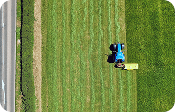

よくあるご質問

よくあるご質問
Q. ご利用について 農業用ドローンの主な用途は何ですか？
農業用ドローンは、作物の健康状態のモニタリング、除草剤・肥料等の散布、灌漑システムの管理など、農業生産の効率を向上させるために使用されます。
Q. ご利用について 製品について 農業用ドローンの導入による主な利点は何ですか？
農業用ドローンの導入により、労働力を削減し作業効率を向上させることができます。また、病害虫の早期発見や適切な散布が可能となり、生産性や質を向上させることができます。
Q. ご利用について 製品について 農業用ドローンの種類は？
フィックスウィング（固定翼）ドローン、ロータリーウィング（回転翼）ドローン、および、マルチコプター（複数のプロペラを持つ）ドローンがあります。
Q. ご利用について 使用について 農業用ドローンの価格はどのくらいですか？
ドローンの種類、性能、機能によって価格は異なりますが、一般的には数万円から数百万円の範囲で販売されています。
Q. 製品について 特別な免許や資格は必要ですか？
農業用ドローンの操縦には、国によって異なるが、無人航空機操縦士免許やドローン操縦資格が必要とされる場合があります。
Q. 使用について 農業用ドローンの法規制は何ですか？
国や地域によって異なりますが、一般的には飛行高度、飛行速度、操縦者とドローンの距離、人口密集地や空港周辺の飛行に関する制限が設けられています。
Q. 製品について 農業用ドローンのバッテリー寿命は？
ドローンの種類やバッテリー容量によって異なりますが、一般的には約20分から60分の飛行時間があります。
Q. 使用について 製品について 散布する薬剤や肥料の量はどのように制御されますか？
農業用ドローンには、散布量を制御するためのシステムが搭載されており、必要な量を正確に散布できます。
Q. 製品について データ収集や解析にはどのようなソフトウェアが使用されますか？
農業用ドローンのデータ収集や解析には、専用のソフトウェアが使用されます。これにより、作物の健康状態や生育状況を詳細に分析することができます。
Q. 使用について 製品について 農業用ドローンはどのような気象条件で飛行できますか？
雨や強風の条件下では飛行が困難だったり安全上の問題が発生することがあります。ドローンの性能や設計によって対応できる気象条件は異なります。
Q. ご利用について 製品について 農業用ドローンのメンテナンスには何が必要ですか？
ドローンの定期点検や部品の交換、ソフトウェアのアップデートなどが必要となります。メンテナンスは専門業者やメーカーに依頼することもできます。